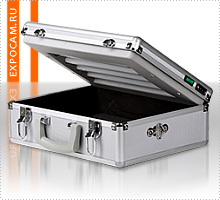

Главная / Информация |
Модели экспонирующих камер: |
|
 Экспонирующая камера |
ИнформацияЭкспонирующая камераПечати имеют корни своего происхождения еще в древности. Русские князья использовали печати с изображением символов Рюриковичей еще до официального принятия христианской религии. Изображения печатей вырезались на металле, камне, кости, стекле, каучуке. Изготовление печатей и штампов - явление распространенное и материалы, из которых они производятся, общедоступны. Экспонирующая камера принадлежит к числу тех немногих технических приспособлений, которые просты в использовании, доступны в цене, компактны, но в то же время позволяют наладить полноценное производство востребованной и качественной продукции. Речь идёт об изготовлении печатей и штампов по фотополимерной технологии, которая доминирует на отечественном рынке ввиду своей простоты и малых затрат на организацию производства. Оборудование для изготовления печатей из фотополимера — это экспонирующая камера, компьютер и лазерный принтер. В экспонирующей камере осуществляется ключевой этап обработки сырья: облучение фотополимера под ультрафиолетовыми лампами, после чего он отвердевает и превращается в новенькое клише с изящным оттиском. Предшествует этому процессу работа на компьютере: создание макета будущей печати при помощи специальной программы и распечатка негатива на принтере (для печати используется особая плёнка). Готовый негатив обкладывается бордюром, который задаёт форму клише. Форма заливается фотополимером, сверху накрывается плёнкой и фиксируется между двумя стёклами. В таком виде заготовка печати попадает в экспонирующую камеру. Подготовительный этап и процесс обработки фотополимера в камере занимает менее 3-х минут, что радует и самих производителей, и потребителей. Фотополимерная технология быстро осваивается даже начинающими штемпелеизготовителями. А производительность труда и, как следствие, доходность производства зависит от технических характеристик экспонирующей камеры. По сути своей, экспонирующая камера — это закрытый ящик, оборудованный несколькими уф-лампами и оснащённый таймером для автоматизации процесса засветки. Экспонирующие камеры обычно классифицируются по типу корпуса, по размеру поля засветки и по мощности ламп. Переносные модели экспонирующих камер выполнены в виде небольшого кейса, но и модели со стационарным корпусом нельзя назвать громоздкими. Простейшие и самые недогорие камеры имеют всего 2 лампы и небольшое поле засветки. Даже они способны обрабатывать около десяти печатей за один цикл, а наиболее производительные модели с большим количеством ламп засвечивают до 50 одинаковых заготовок за цикл. Производители заботятся о том, чтобы каждый покупатель экспонирующей камеры был обеспечен подробной печатной инструкцией и талоном гарантийного обслуживания. В итоге, какую бы экспонирующую камеру вы ни выбрали, стоимость её будет сравнительно невысока. Всего за несколько тысяч рублей вы сможете приобрести отличное оборудование для изготовления печатей и штампов из фотополимера. |
|||||